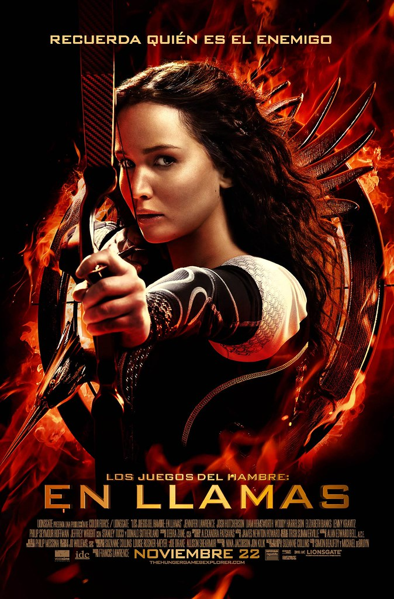
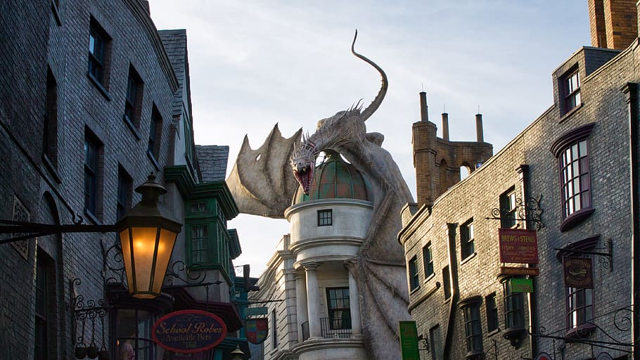
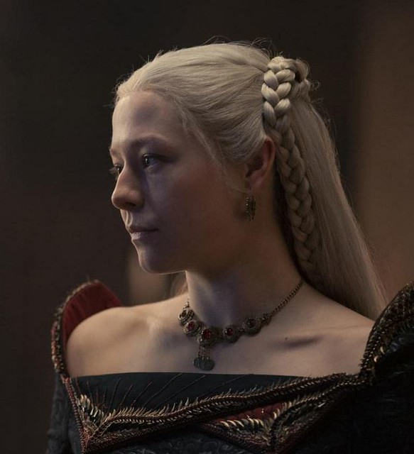
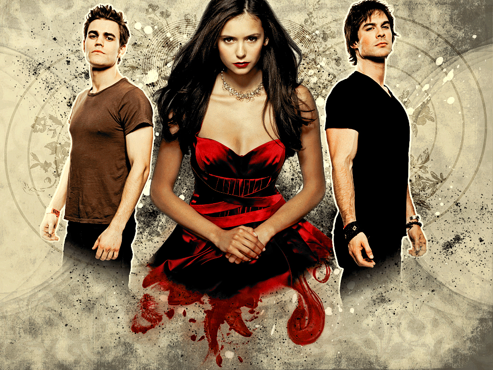

.png)
Los Juegos del Hambre

¡Felices Juegos del Hambre! y... Que la suerte esté siempre de vuestra parte.
Cada año, el Capitolio organiza un evento llamado "Los Juegos del Hambre", en el que se elige a un chico y una chica de cada distrito para luchar a muerte en una arena hasta que solo quede un ganador...
Harry Potter y Animales Fantasticos

La felicidad puede hallarse hasta en los más oscuros momentos, si somos capaces de usar bien la luz.
La historia sigue las aventuras de un joven huérfano llamado Harry Potter, quien descubre que es un mago y es admitido en la Escuela de Magia y Hechicería de Hogwarts...
Juego de Tronos y la Casa del Dragon

Valar Morghulis. Todos los hombres deben morir. Pero nosotras no somos hombres.
La historia sigue la lucha por el poder entre varias familias nobles que luchan por el control del Trono de Hierro, que representa el gobierno de los Siete Reinos...
Cronicas Vampiricas

Quieres lo que todo el mundo quiere, quieres un amor que te consuma, quieres pasión, aventura, e incluso un poco de peligro.
Una chica atrapada en su pueblo tras la muerte de sus padres en un accidente de coche, la monotonía del día a día la aburre, hasta que se encuentra con ¿un vampiro?...
The Last of Us

Hasta el borde del universo y de regreso. Soportar y sobrevivir.
Un mundo destruido por un virus, el cordyceps, ha destruido hogares, vida. Ahora sola queda intentar sobrevivir en las lejanas ciudades que quedan, para intentar salvarse de la masacre que están cometiendo, los abusos de poderes...